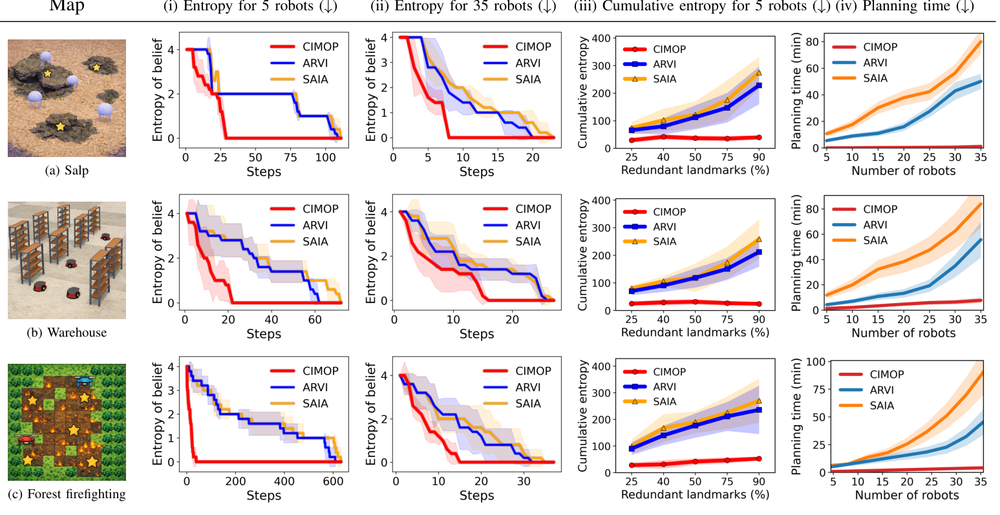

Results across three domains: salp, warehouse, and forest firefighting

Belief entropy for 5 and 35 robots, cumulative entropy under increasing redundant landmarks, and planning time with growing team size. CIMOP infers the context faster and scales far better than ARVI and SAIA across all domains. All results are averaged over five instances with randomized starting locations.